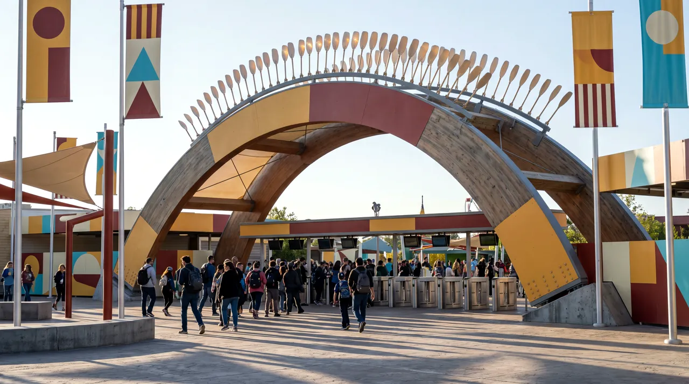
WONDERYARD
Growing up was optional. Six worlds, one gate, a hundred waving hands, a river with opinions and a house at the wrong angle — and every night ends with exactly one firework.
You’re through the gate. Now what? The honest answer: it depends which way you walk. WONDERYARD is six districts stitched together by one long looping path, and this page walks it the way the park does — morning in The Yard, and the far end always, always in the dark.
The Yard
The middle of everything
The park’s beating centre. The Hundredhand waves on the hour, a brass band owns the bandstand, and every path in the park eventually brings you back here — usually hungrier than you left.
No horses. Ride creatures that never existed and probably should — allocated by queue order, argued about for years.
Brass in the morning, drums at noon, something unclassifiable at four. Check the day’s board and trust it.
Nothing you could easily make at home. Everything you can eat with one hand.
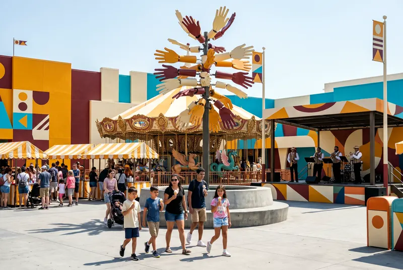
The Hundredhand
A tower of one hundred articulated steel hands above the plaza. On the hour, they wave. People wave back. Nobody has ever explained why, and nobody needs to.
Tilt
For people who like their stomach elsewhere
The tall district. Timber lattice, red steel, and the sound of forty people changing their minds at the top of a hill. Tilt is where WONDERYARD keeps its gravity experiments.
A forty-metre pendulum that ticks. Each swing is one second on a clock that runs far too slowly to be measuring anything good.
A high-ropes garden planted over the whole district. Cross it and you’ll know more about your friends than you did at the gate.
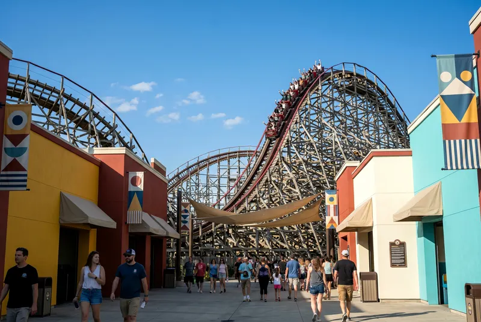
Loosetooth
Our wood-and-steel hybrid. 47 metres up, 100 km/h down, and a first drop with a name we can’t print on signage. It rattles exactly as much as it should.
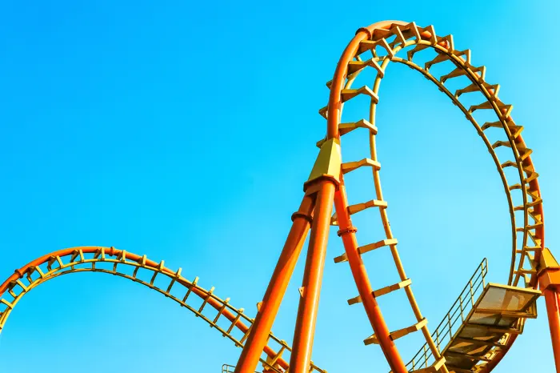
Soak
You will not stay dry. That’s the contract.
Mist arcs, splash lagoons, a river with opinions and a storm you control. Soak is the wet quarter of the park, and dryness here is considered a personal failing.
A lazy river with opinions. Mostly it drifts. Occasionally it decides you were getting too comfortable.
A glass hall where the weather answers to a brass wheel. Drizzle, downpour, sideways monsoon — you drive.
A splash battleground with pump stations, crossfire bridges and no neutral parties. Alliances form fast and end faster.
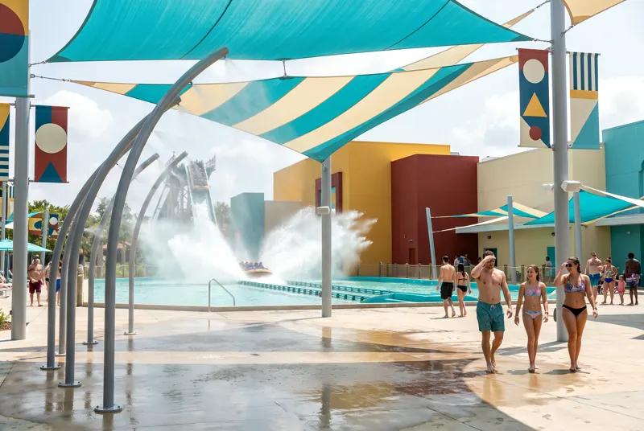
Squall
A water coaster that ends in a splashdown you can hear from The Yard. The people on the bridge get wetter than the people in the boat. They know. It’s why they’re there.
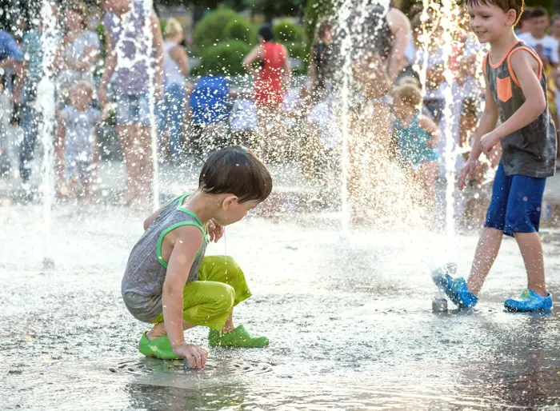
Sideways
Normal rules, slightly loosened
A house that leans, doors that go nowhere in particular, a marble run you could lose a friend inside. Sideways is what happens when playground engineers stop being told no.
A racetrack where last place wins. Harder than it sounds. Much harder. The record is 41 minutes and it is fiercely defended.
A marble run at architecture scale, rolling spheres the size of dogs through steel channels overhead. You operate the gates.
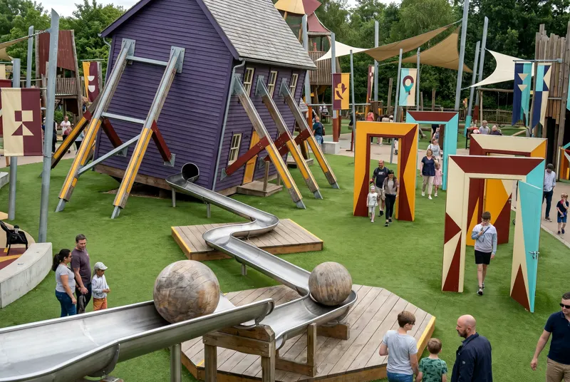
The Upside House
A whole house at the wrong angle. Walk it upright while your eyes and ears file separate reports. Exit through the fireplace.
Little Giants
Where the small people are the big people
Grass three metres tall. A picnic table you climb instead of sit at. Little Giants is scaled so the under-tens finally get to be the giants — grown-ups are welcome, at their own risk of feeling short.
Built, defended, lost and rebuilt roughly hourly. Soft ramparts, rope bridges, and a strict no-adults tower.
Fifteen minutes, twice a day, led by whichever children volunteer at the gate. Chaotically punctual.
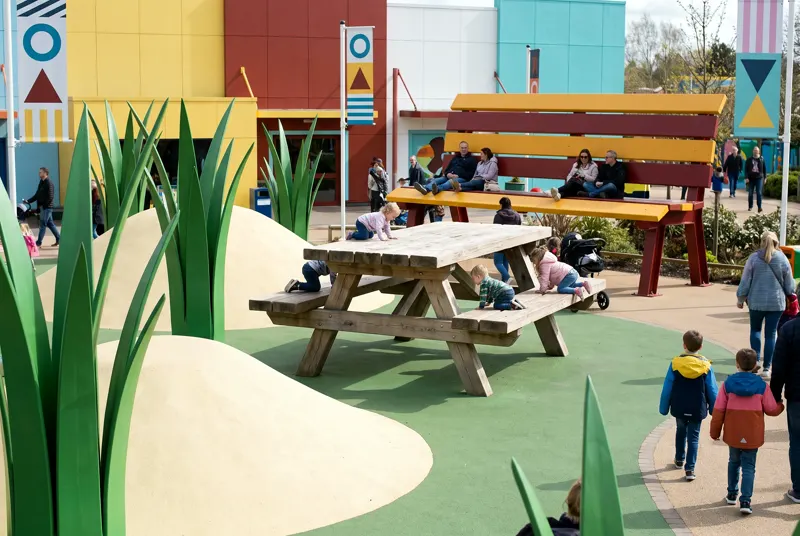
Tall Grass
A meadow at ant scale — grass over your head, ladybirds you can sit on. For the under-tens it’s the one place in the world built to size.
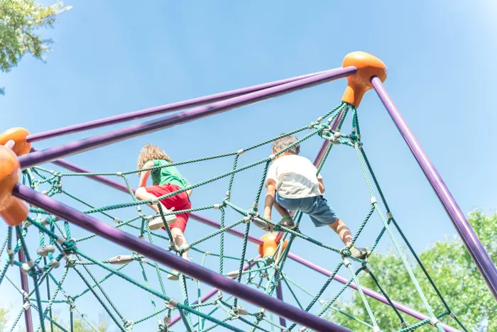
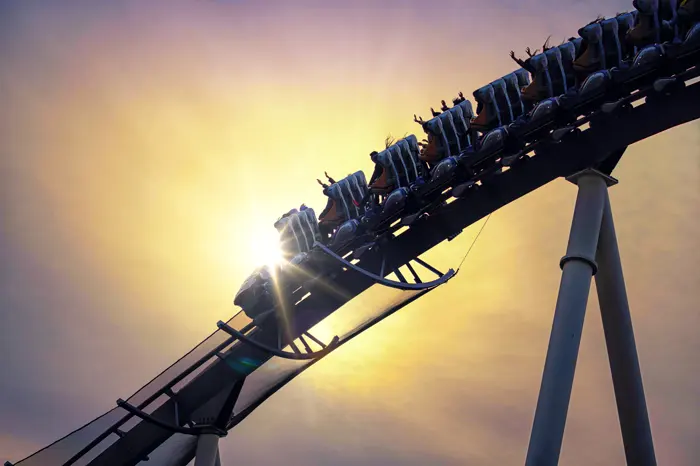
The day has a deep end.
Around seven the light goes long, the queues go short, and the park quietly changes shift. Most people leave. The ones who know, don’t.
Afterdark
The park after sunset
At sunset WONDERYARD doesn’t close — it changes shift. Lanterns go up, the Night Market opens, Loosetooth runs into the dark, and every night ends with exactly one firework.
A path of a thousand lanterns from The Yard to the lake. It opens when the sky goes indigo and closes when the firework says so.
Steam, smoke, skewers, sugar. The cooks change nightly and the best stall is always the one about to sell out.
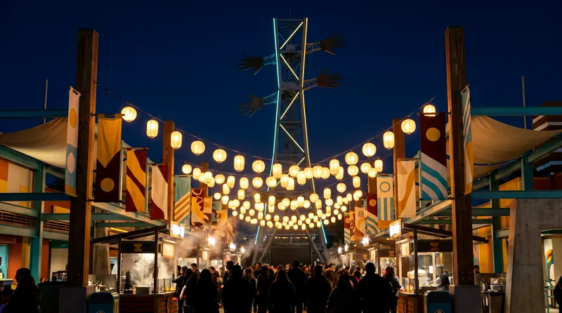
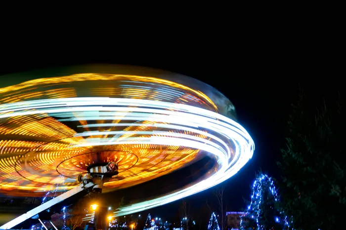
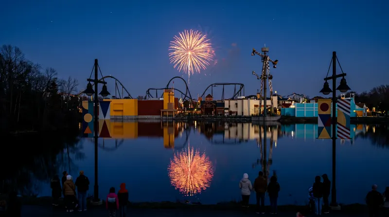
Every night ends with exactly one firework.
Not a barrage. Not a finale medley. One. The park goes quiet, the lake goes still, and for eleven seconds everybody you came with is looking at the same thing. You will remember it longer than a thousand.
TONIGHT · 22:45 · THE LAKE
Stay for the firework.
Full Day
$89 kids $69Gate to firework. All six worlds, all day.
Afterdark
$49 kids $39From 5pm. Night rides, Night Market, Lantern Route, the firework.
Family Day
$280 2 adults + 2 kidsThe Full Day, four times over, minus the arithmetic argument.